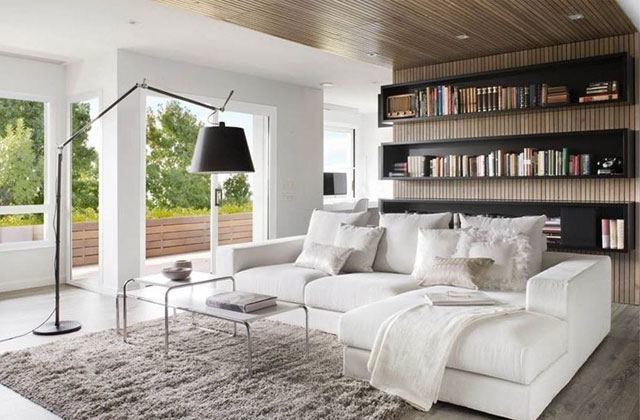
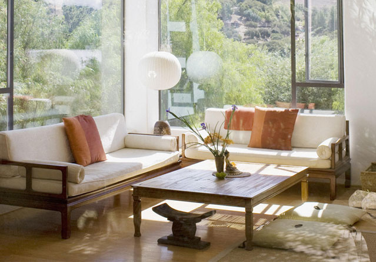

家装O2O不能言说的口碑之伤
转自：网易家装- 
装修工程不是现成的产品无论施工队还是装修公司，装修都是在装饰设计和施工过程中形成试想，装修前，装修企业内部的质检（经常误称为监理），怎么可能指出自家预算中的漏洞，帮助消费者签订公平、透明的装修合同呢？装修过程中装修企业内部的质检是自己监督自己，运动员兼作裁判员的监督机制消费者又会获得几层的知情权装修后如果装修企业自己出现重大问题，又怎么可能代理消方监理才能公正客观的处理装修中的问题，才能真正地保障业主的权益。
- 
管家式监理不同于传统的监理，传统监理只负责工程质量的验收，装小蜜更关注装修的整体方案，除了监理工程质量之外帮助业主审核设计图纸，审核工程预算，跟踪工程进度，装修监理帮助业主审核装修方案和报价，防止高估冒算和中期无限度任意加项加价，使用户支付合理的装修价位提供资金托管及全程咨询服务等，全方位解决业主的装修烦恼。


中国建筑装修协会（CBDA）
全国唯一授权互联网监理资质